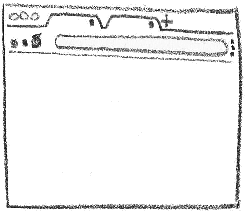

60fps or
nothing
Francesco Sciuti
CEO & Co-Founder @ Devmy
Google Developer Expert & ex Microsoft MVP
DevRel expert @ Codemotion, speaker
and trainer
linkedin.com/in/francescosciuti/
 github.com/fsciuti
github.com/fsciuti
youtube.com/c/acadevmy
linkedin.com/company/devmyfactory
Emiliano Pisu
Father of 2 lovely "monsters"
D&D master, player ... whatever
Senior Design Engineer, Sensei & Co-Host
@ Dev Dojo IT
linkedin.com/in/pixu1980
github.com/pixu1980
 codepen.io/pixu1980
codepen.io/pixu1980
linkedin.com/company/dev-dojo-it/
youtube.com/@devdojo_it
 twitch.tv/devdojo_it
twitch.tv/devdojo_it
@devdojo_it
If an animation stutters or a UI responds late, it is not always the browser's fault.
The rendering pipeline explains when you are paying for layout, paint, or composition.
Optimization is not free: we choose APIs, CSS properties, and JavaScript orchestration more carefully so we do not waste frames.
Let us go through clear criteria, reusable examples, and smooth animations on real browsers and webviews.
What are we going to
talk about today?
Agenda
- What FPS means, what 60fps means, and why 16.67ms matters
- Before pixels: event loop, frame budget, and three renderer costs
- Performance Matrix, CSS vs JS, and why compositing wins
- Reality check: users, processes, threads, URL-to-pixels, CRP
- Examples refocused on browser-friendly motion, not demo-only sparkle
- Practical rules to keep interface at 60fps
What are FPS?
FPS means frames per second: how many complete images the browser can present every second.What does 60fps mean?
It means delivering 60 fresh frames every second. When you miss one slot, browser repeats previous frame and motion instantly feels late.Smoothness is not animation magic. It is input, JavaScript, style, layout, paint, and compositing all reaching next frame in time.
A 60Hz screen gives you 16.67ms
A 60Hz display refreshes 60 times per second, so one frame slot is 1000 / 60 = 16.67ms. Miss that slot and the browser shows the previous frame again. On 120Hz, the budget drops to 8.33ms.That budget is shared by JavaScript, style calculation, layout, paint, compositing, and platform overhead.
Before pixels, JavaScript gets a turn
The browser event loop runs a task, flushes microtasks, then gives rendering a chance. If your code overstays, the next frame waits.The three words that really matter
Layout, paint, and composition are not synonyms for "animation". They are different costs, with different culprits.Computes sizes and coordinates.
width, height, top, left, font-size
Draws fills, borders, text, and shadows.
background, color, box-shadow
Reassembles already rasterized layers.
transform, opacity
- Paint builds a list of draw commands
- Apparently harmless combinations can invalidate large areas
- Shadows, blur, clipping, and complex backgrounds are often the first suspects
- The compositor thread can create frames without blocking the main thread
- That is why well chosen scroll and transform effects can feel "free"
- But layers are not free: too many layers consume memory and raster time
Performance Matrix
Same perceived effect, very different cost. The browser does not negotiate here.transformopacity- simple
filter - native
scroll-driven
backgroundbox-shadowborder-radius- complex
clip-path
width,heightinset,top,leftmargin,padding- Read/write DOM in the same frame
Prefer composition when visual result allows it. Measure paint. Budget layout deliberately.
CSS vs JavaScript is not a religious war
Right question: who drives change, and which renderer phase are you touching?CSS excels at
- State transitions
- Scroll-driven effects
- Declarative timing and easing
- Progressive enhancement with @supports
JS excels at
- Pointer and gesture input
- Physics and imperative orchestration
- Reading app state and external signals
- Bridging UI intent into CSS custom properties
CSS is not magic. Compositing is.
CSS helps when browser can own timeline, but real win is keeping motion on compositor-friendly properties and away from layout and paint.How to stay GPU friendly
- Prefer transform and opacity for motion
- Use CSS transitions, animations, view(), and @starting-style when browser can drive timeline
- Promote layers carefully with will-change or stable transforms only where it truly helps
- Let JS set state or CSS custom properties, not geometry on every frame
What breaks the budget
- Animating width, height, top, left, or font metrics
- Forced sync layout from read/write DOM work in same turn
- Large paint invalidations from blur, shadow, and complex clipping
- Too many layers, trading main-thread relief for memory and raster cost
We are all great with someone else's browser
As long as a demo runs on the right laptop, every animation looks brilliant. The problem starts when the browser actually has to do its job.- Users do not judge your code, they judge the pixels that reach the screen
- They notice lag, input delay, choppy scroll, and layout instability
- Understanding the renderer helps you choose better between CSS, JS, and asset strategy
A browser is not a window: it is a multi-process system
Browser process, renderer process, GPU process, network, and storage: this is where you first see why a frame is never "just CSS".- Browser process: UI, tab lifecycle, security, coordination
- Renderer process: HTML, CSS, JS, layout, paint, compositing
- GPU process: raster work and final composition
- IPC: every hop between processes has a real cost

- Processes talk through IPC, while threads share memory inside the same process
- The main thread and compositor thread have different responsibilities
- If you saturate the main thread, the browser cannot read input or prepare the frame in time
From URL to pixels
Navigation, parsing, style calculation, layout, paint, compositing. Every UI choice enters this pipeline.- Input starts in the browser process, then reaches the renderer
- HTML and subresource loading unlock work on the main thread
- Every late resource can push the frame budget later than it should be
The Critical Rendering Path
- Parsing: bytes to DOM and CSSOM
- Style Calculation: computed styles per node
- Layout: geometry and position
- Paint: what to draw and in which order
- Composition: layers, tiles, final frame
Entrances: the browser loves simple starting states
If your entrance is a clean transition between two states, let CSS start it. No observer, no class toggling, no JS.
.sponsor-logo {
opacity: 1;
transform: scale(1) translateY(0);
transition:
opacity 0.3s ease-out,
transform 0.3s cubic-bezier(0.34, 1.56, 0.64, 1);
@starting-style {
opacity: 0;
transform: scale(0.5) translateY(40px);
}
transition-delay: calc((var(--i, 0) + 1) * var(--stagger-base));
}
- CSS only, so there is no event wiring or JS orchestration cost
- If you animate transform and opacity, you are mostly paying for composition
- Use JS only when the entrance depends on data, gestures, or complex sequencing
Scroll reveal: view() versus observer plus class toggling
Aurora Core
Brick Harbor
Cinder Loop
Delta Bloom
Ember Stack
Flux Garden
Glacier Node
Horizon Lab
.scroll-view-card {
animation: reveal-and-elevate 0.8s cubic-bezier(0.34, 1.56, 0.64, 1) both;
animation-range: entry 35% cover 70%;
animation-timeline: view(inline);
}
@keyframes reveal-and-elevate {
from {
opacity: 0;
transform: scale(0.85) translateY(8rem);
filter: blur(8px);
}
}
CSS timeline
- Legata allo scroll nativo
- Minor glue code
- Molto vicina al compositor mindset
JS observer
- More portable today
- Useful for analytics or business logic
- But it often turns into imperative class toggling
CSS can do much more than easing and fade
Modern math functions move part of the visual logic into CSS, leaving JS only the orchestration when it is really needed.- sibling-index() and sibling-count() move positional math into CSS
- sin(), exp(), and pow() let you build smarter layout and motion systems
- No layout thrashing from JS if the browser can derive everything from custom properties
All I have left is to wish you...
You really thought
so, huh?
- Register numeric custom properties so browser can interpolate them
- Map pointer position into rotateX and rotateY values
- Let CSS own the transform math instead of re-rendering DOM every frame
Depth comes from two tiny rules
- perspective and perspective-origin react to current tilt, so depth follows pointer
- Each layer uses translateZ() with sibling-index() to create stack spacing
- Same visual trick, much cheaper than repainting separate scenes in JS
registered @property
Differently than normal custom properties, the ones registered via @property at-rule are transitionable and animatable, allowing to calculate interpolation between all the specified values.Wrapping up
CSS first
- Great for state changes, entrances, scroll reveal, and choreography
- If you stay on transform and opacity, the browser flies
- New APIs now cover cases that used to require JS
JS when needed
- Needed for realtime input, gestures, physics, and data orchestration
- It should not fight the renderer with continuous layout read and write work
- Its best role is to provide intent, not move pixels by hand
The real comparison is not CSS versus JS. It is understanding which browser layer you are activating and whether your choice keeps the frame under 16.67ms.
- Prefer composition whenever the visual result allows it
- Measure before you optimize: DevTools, Performance panel, Layers
- Use JavaScript to steer the system, not to rebuild layout on every frame
Personal Links

DevDojo Links